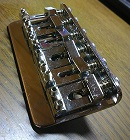
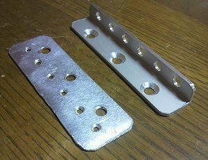
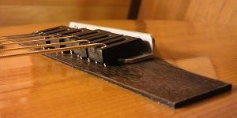

エレキギター用ブリッジをアコースティックギターへ取り付ける
2011年07月25日 カテゴリー：ギター関係
タイトルの通り、エレキ用ブリッジをアコギに取り付けてみようという企画です。
フロイドローズっぽいのがアコギにつけてある動画を見た覚えがありますが、今回は普通の固定ブリッジです。
はじめに下の写真のようなテレキャスターシンライン用ブリッジをつけてみようと試みました。

アコギのブリッジはノミやヤスリを駆使して平面に削りました。弦は裏通しにします。
…しかしながらそれだと弦高が高すぎで失敗でした。もっと計算してから取り付ければよかったです。
次にブリッジの厚みの分だけ弦高を下げられるようにパーツを自作しました（下写真右）。材料はホームセンターで売っているアルミのアングル材です。さらに木ネジでは保持力に不安があるので、ブリッジの裏側にアルミの板をつけてネジとナットで取り付けるようにしました（下写真左）。弦のボールエンドもアルミ板で押さえるようになります。

アコギのブリッジ自体もさらに削り込み、何とか下写真のように収まりました。ブリッジサドル自体を削ることも考えていたのでストリングセイバーという樹脂製サドルを使いましたが、削らずに済みました。アコギのブリッジ木部の中央が薄くなっているように見えますが、トップ板が膨らんでいるので平面に削るとこうなってしまいます。

写真では見えませんが、サドルの弦高調整用ネジが木に食い込んで傷がついています。アコギの木製ブリッジ部分を完全に剥がしてシンライン用ブリッジを使った方がいいかもしれません。
良い点はなんといっても弦高調整やオクターブ調整が簡単に行えることです。悪い点は、音が変わってしまう、弦裏通しなので弦の交換がしにくい（手探りで裏の穴から弦を通す）、といったことです。
本来はトップ板の振動を抑えないようにしなければいけないので、今回のブリッジはかなり邪道だと思います。また、普通のアコギのブリッジはサドル全体がトップ板と接触していますが、今回はサドルの弦高調整ネジ部分だけしかトップ板と接触していませんので、弦振動の伝達性も悪くなっていると思います。ただ体感上はサスティーンが伸びたような気がしています（ストリングセイバーサドルのおかげかも）。
弦の交換についてはもう少し工夫すれば何とかなるかなぁという感じなので、また良い案を考えていきたいと思います。